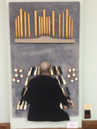

-1-MasterItem.svg)
Stories of Westminster United Church & its People / Page
173
Notre Dame Cathedral and Washington Cathedral.
It is the only concert series of its kind in Winnipeg,
serving mainly the Winnipeg community but also drawing
patrons from southern Manitoba. Audiences are treated
to some of the greatest organ music written and offered
the opportunity to hear varied organ repertoire in an
exceptional acoustic environment with superb
sight lines to the organ console.
For his 45th Anniversary, Westminster United Church
commissioned Montreal organist and composer Rachel
Laurin to write Suite in D major for Don Menzies, op. 63,
for Organ, in celebration of the occasion. The fifteen-minute
work, based on the hymn
For the Music of Creation
, has three
movements. The first movement has six variations on the
melody. The last of these variations, in its ‘non-pedal’
version, alludes to a Christmas Day 1991 during Don’s
tenure when he broke a leg. According to the composer:
“Having two versions of the same variation could help
in these particular cases, leaving everything to ‘hands
in praise’ to avoid ‘dancing feet’ …!” Cantabile and
Dialogues form the second and third movements. The piece may be played as a
whole
or each movement may be performed separately within a liturgical service.
Music at Westminster

The picture above was a gift to Don from Rev. Bob Burton
on the occasion of his 50th Anniversary (an ingenious construction
of ‘found pieces’ showing Don at the console.)